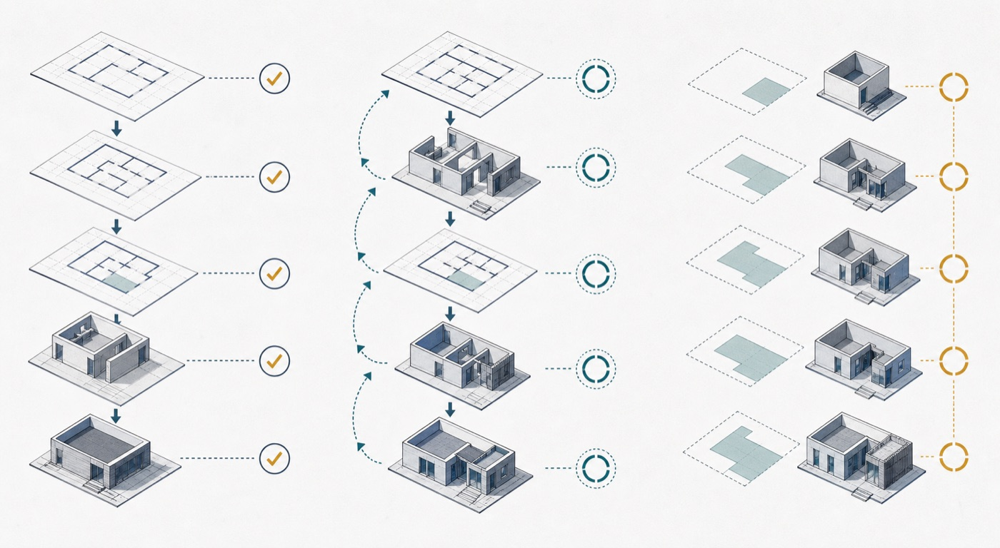

Why this matters
Section 12 answers often need explanation, not code. The marks come from linking lifecycle activity to project risk.
Cambridge AS9618 Computer Science | Paper 2 Section 12
Software development lifecycle models describe how software is planned, produced, tested, evaluated and maintained. The key idea is not memorising stage names like a spell; it is explaining why each stage matters and when feedback may send the project back to an earlier stage. Chinese support: lifecycle 生命周期, requirements 需求, maintenance 维护。
Section 12 answers often need explanation, not code. The marks come from linking lifecycle activity to project risk.
The lifecycle is not always a one-way checklist. Testing, evaluation and maintenance can reveal a need to revisit design or requirements.
Warm-up hook
The keyboard is ready. The requirements are not. Choose the sensible first move.
Purpose
Identify the problem, users, requirements and constraints before building.
Make progress visible through stages, documents and review points.
Use testing and evaluation to identify faults or missing requirements.
Visual explanation

Each stage asks a different question about need, design or evidence.
Its output makes assumptions visible for review.
Later work proceeds with clearer constraints and acceptance criteria.
AnalogyArchitectural plans turn assumptions into inspectable decisions before construction.
BoundaryDocuments help only when they stay accurate and influence decisions.
Lifecycle stages
Visual explanation
Analysis defines the problem and required outcomes.
Design translates requirements into components, data and interfaces.
Implementation and testing create and check the resulting system.
AnalogyA specification becomes a plan, then a build, then evidence of fitness.
BoundaryFeedback may return to an earlier stage when evidence exposes a bad assumption.
Waterfall model
Requirements are stable, the project is well understood, and documentation/sign-off are important.
Late requirement changes can be costly because earlier stages may need to be revisited.
Visual explanation
A stage is reviewed before the next major stage begins.
Early agreement supports budgets, contracts and traceable approvals.
Late change crosses completed boundaries and causes expensive rework.
AnalogyChanging foundations after upper floors exist is harder than changing a drawing.
BoundaryWaterfall suits stable requirements; sequence alone does not guarantee quality.
Iterative development
Visual explanation
Build a limited version around a defined goal.
Review evidence from users, tests or prototypes.
Feed the findings into the next improved cycle.
AnalogyA model is built, inspected and revised before the full structure is fixed.
BoundaryRepeated work without a review goal is rework, not controlled iteration.
Agile-style idea
Small working increments are produced and reviewed.
Users can comment early, before the wrong system becomes large.
Changing requirements can be handled more flexibly than in a rigid sequence.
Visual explanation
A small increment makes assumptions visible quickly.
Frequent stakeholder feedback reprioritises the next increment.
Less unreviewed work depends on a mistaken requirement.
AnalogyRegular design reviews correct direction while only a small section is built.
BoundaryAgile still requires architecture, testing and available informed stakeholders.
Comparison
Visual explanation
Stable regulated work values traceability and formal approval.
Uncertain user-facing work values short feedback distance.
Dependencies, risk and stakeholder availability constrain the viable choice.
AnalogyChoose a planning rhythm that matches how often reliable evidence arrives.
BoundaryNo lifecycle model is inherently fastest or best for every project.
Artefacts
Visual explanation
Requirements define what successful behaviour means.
Designs and tests link implementation choices to those requirements.
Traceability exposes every item affected by a later change.
AnalogyA linked evidence trail shows which plans and checks depend on one decision.
BoundaryAn outdated artefact can mislead more than an absent one.
Interactive model selector
Stage order checker
Worked examples
Practice
Mistake debugging
Exam-style questions
These are original questions written in Cambridge style. They do not copy past paper questions.
Summary
Homework